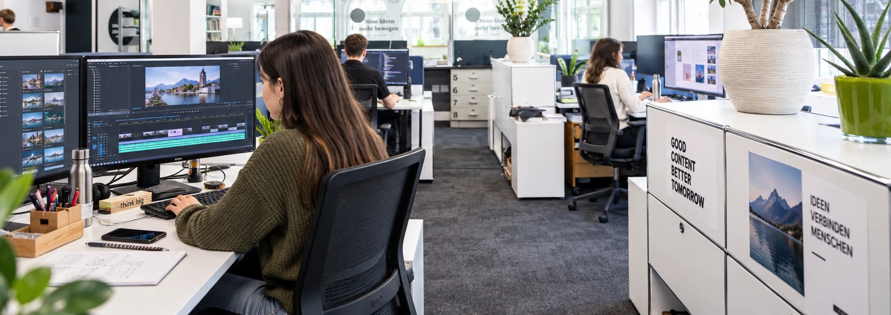
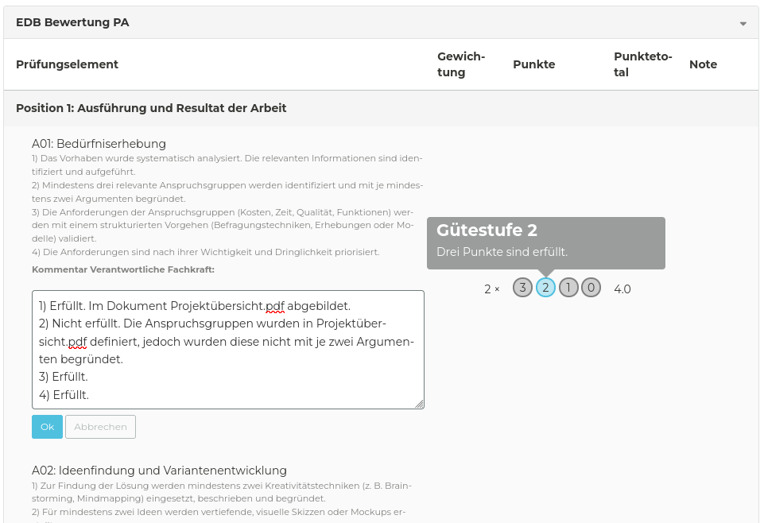

Prüfungskommission 21
<!-- .slide: class="title-layout" --> # Infoveranstaltung<br>für verantwortliche Fachkräfte <div class="title-content"> Qualifikationsverfahren 2027<br>Entwickler/in digitales Business </div> --- <!-- .slide: class="content-layout" --> <p class="eyebrow">Vorstellung</p> ## Die wichtigsten Punkte im Überblick. <div class="slide-content"> <ul class="key-points"> <li class="fragment"><h3>Ein echtes Projekt aus dem Arbeitsumfeld</h3><p>Die verantwortliche Fachkraft formuliert einen praktischen Auftrag, den die kandidierende Person erfüllt.</p></li> <li class="fragment"><h3>10 Arbeitstage für die IPA</h3><p>6 bis 7 Tage Umsetzung und 3 bis 4 Tage Dokumentation; am Stück oder verteilt über maximal 2 Monate</p></li> <li class="fragment"><h3>Begleitung durch ein Expertenteam</h3><p>Zwei Besuche während der Umsetzung und ein dritter für Präsentation und Fachgespräch.</p></li> <li class="fragment"><h3>Aufgabe und Bewertung in PkOrg</h3><p>Aufgabe definieren, Validierungsfeedback bearbeiten, Beobachtungen festhalten und die Bewertung fristgerecht signieren.</p></li> </ul> </div> --- <!-- .slide: class="content-layout" --> <p class="eyebrow">Vorstellung</p> ## Die PK21 begleitet Dich und Deine kandidierende Person. <div class="slide-content"> <p class="lead">Die PK21 organisiert die <strong>Validierung und Durchführung der IPA</strong> sowie die <strong>Ausstellung des EFZ</strong>. Als verantwortliche Fachkraft bist Du die zentrale Ansprechperson im Betrieb.</p> <div class="people-list fragment"> <div> <img src="./assets/vivienne.png" alt="Vivienne" /> <strong>Vivienne Merz</strong>Präsidentin </div> <div> <img src="./assets/claudia.png" alt="Claudia" /> <strong>Claudia Bartholet</strong>Aktuarin </div> <div> <img src="./assets/robin.png" alt="Robin" /> <strong>Robin Bühler</strong>Chefexperte EDB </div> <div> <img src="./assets/barbara.png" alt="Barbara" /> <strong>Barbara Bisko</strong>Chefexpertin Validierung EDB </div> </div> </div> --- <!-- .slide: class="content-layout" --> <p class="eyebrow">Rollen</p> ## Die Rollen im Rahmen der IPA <div class="slide-content"> <div class="image-text"> <div> <dl> <dt><strong>BB</strong> Berufsbildner/in</dt> <dt><strong>KAND</strong> Kandidierende Person</dt> <dt><strong>CEX</strong> Chefexperte</dt> <dd></dd> <dt><strong>VF</strong> Verantwortliche Fachkraft</dt> <dd>Formuliert den Auftrag, begleitet die Arbeit im Betrieb und hält Beobachtungen fest.</dd> <dt><strong>HEX / NEX</strong> Haupt- und Nebenexperte</dt> <dd>Begleiten die IPA aus Sicht des Expertenteams und wirken an der Bewertung mit.</dd> <dt><strong>VEX</strong> Validierungsexperte</dt> <dd>Prüfung der Aufgabenstellung</dd> </dl> </div> <figure style="width: 500px; max-width: 100%;"> <img src="./assets/rollen.png" width="768" height="432" style="height: 500px; margin-block-start: -5rem" alt="Diagramm der Rollen"> <figcaption>Diagramm: Rollen</figcaption> </figure> </div> </div> --- <!-- .slide: class="content-layout" --> <p class="eyebrow">Agenda</p> ## Was Dich erwartet. <div class="slide-content"> <div class="image-text"><!-- .element style="grid-template-columns: minmax(0, 2fr) minmax(0, 1fr);" --> <div> <ol class="agenda-list"> <li class="fragment"><h3>Vor der IPA</h3><p>Registrierung, Thema und Grobbeschrieb</p></li> <li class="fragment"><h3>Aufgabe und Validierung</h3><p>Detailliertes Briefing, Kriterien und Zeitplan</p></li> <li class="fragment"><h3>Während der IPA</h3><p>Begleitung, Beobachtung und Protokoll</p></li> <li class="fragment"><h3>Nach der Abgabe</h3><p>Bewertung, Präsentation und Fachgespräch</p></li> </ol> </div> <figure style="width: 400px; max-width: 100%;"> <img src="./assets/agenda.jpg" width="768" height="432" style="height: 400px;" alt="Agenda"> <figcaption>Foto von <a href="https://unsplash.com/@lorinboth?utm_source=unsplash&utm_medium=referral&utm_content=creditCopyText">Lorin Both</a> auf <a href="https://unsplash.com/photos/a-clock-hanging-from-the-ceiling-of-a-building-GJ_3j24tT1w?utm_source=unsplash&utm_medium=referral&utm_content=creditCopyText">Unsplash</a></figcaption> </figure> </div> </div> --- <!-- .slide: class="title-layout section-layout" --> <span class="section-number" aria-hidden="true">01</span> # Vor der IPA <div class="title-content"> Registrierung, Themenwahl und Grobplanung </div> --- <!-- .slide: class="content-layout" --> <p class="eyebrow">Ablauf</p> ## Die Schritte bis zum Start. <div class="slide-content"> <ol class="timeline"> <li><h3>Registrierung (ab 25.11.)</h3><p>Einladung durch den/die BB, um Dich auf der Prüfungsplattform zu registrieren.</p></li> <li class="fragment"><h3>Grobplanung (bis 31.12.)</h3><p>Du gibst zusammen mit der KAND die Grobbeschreibung und den Startblock ein.</p></li> <li class="fragment"><h3>Aufgabenstellung (bis 1 Monat vor dem Start)</h3><p>Detaillierte Aufgabenstellung ausarbeiten und auf der Prüfungsplattform eingeben.</p></li> <li class="fragment"><h3>Validierung und Freigabe (bis wenige Tage vor dem Start)</h3><p>Der/die VEX gibt die IPA zur Umsetzung frei.</p></li> </ol> <aside class="callout">Plane rückwärts vom IPA-Start und bearbeite Rückmeldungen zeitnah.</aside> </div> --- <!-- .slide: class="content-layout" --> <p class="eyebrow">Aufgaben</p> ## Was vor dem Start ansteht. <div class="slide-content icon-list"> <div class="icon-list-item fragment"> <img src="../lib/assets/icons/business/fingerprint.svg" alt="Registrierung"> <div> <h3>Registrieren</h3> <p>Ab dem <strong>25. November</strong> registriert sich die KAND auf <a href="https://pkorg.ch">PkOrg</a>, lädt den/die BB ein, der/die wiederum Dich als VF einlädt.</p> </div> </div> <div class="icon-list-item fragment"> <img src="../lib/assets/icons/education/book-1.svg" alt="Dokumente lesen"> <div> <h3>Dokumente lesen</h3> <p>Lies das aktuelle <strong>IPA-Handbuch</strong> und <strong>Bewertungsformular</strong> auf <a href="https://pk21.ch">pk21.ch</a>. Die Anforderungen sind Grundlage für Aufgabe und Bewertung.</p> </div> </div> <div class="icon-list-item fragment"> <img src="../lib/assets/icons/education/creativity.svg" alt="Austauschen"> <div> <h3>Ideen prüfen</h3> <p>Prüfe Ressourcen, Zugänge und Zeitfenster im Betrieb. Prüfe die Machbarkeit innerhalb der <strong>10 Arbeitstagen</strong>.</p> </div> </div> <div class="icon-list-item fragment"> <img src="../lib/assets/icons/education/laptop.svg" alt="Arbeitsumgebung vorbereiten"> <div> <h3>Grobplanung erfassen</h3> <p>Bis <strong>31. Dezember</strong> den Startblock, die Dauer, den Modus, den IPA-Titel und den Grobbeschrieb in PkOrg erfassen und mit die KAND signieren.</p> </div> </div> <div class="icon-list-item fragment"> <img src="../lib/assets/icons/building/engineer.svg" alt="Vorbereitung"> <div> <h3>Aufgabenstellung ausarbeiten</h3> <p>Arbeite die detaillierte Aufgabenstellung aus, nehme am Workshop teil und gib sie bis <strong>spätestens 1 Monat vor dem Start</strong> zur Validierung frei.</p> </div> </div> <div class="icon-list-item fragment"> <img src="../lib/assets/icons/education/alarm.svg" alt="Vorbereitung"> <div> <h3>Rechtzeitig beginnen</h3> <p>Die KAND muss <strong>zum deklarierten Starttermin</strong> mit der Umsetzung beginnen.</p> </div> </div> </div> --- <!-- .slide: class="content-layout" --> <p class="eyebrow">Aufgaben</p> ## Ein geeignetes IPA-Thema finden. <div class="slide-content"> <div class="two-cols"> <div> <h3>aus dem Berufsalltag</h3> <ul> <li>Daten verarbeiten und analysieren</li> <li>Evaluation von Schnittstellen</li> <li>Prozesse entwickeln, optimieren, vereinfachen und digitalisieren</li> <li>Schulungen entwickeln und durchführen</li> <li>...</li> </ul> </div> <div class="fragment"> <h3>zur KAND passend</h3> <ul> <li>Stärken und Bekanntes berücksichtigen</li> <li>Aufbauend auf bisherigen oder aktuell laufenden Projekten</li> <li>Etwas, was für die KAND nicht komplett neu ist</li> <li>Etwas, was den Berufsalltag der KAND betrifft</li> <li>...</li> </ul> </div> </div> <div class="fragment"> <h3>was nicht passt</h3> <div class="two-cols"> <div> <ul> <li>Durch den KAND formulierte Aufgabenstellungen</li> <li>Fiktive Themen</li> <li>Unbekannte Produkte und Methoden</li> </ul> </div> <div> <ul> <li>Zu einfache oder zu komplexe Themen</li> <li>Zu grosser Umfang für 6 bis 7 Umsetzungstage</li> <li>Unklare oder nicht objektiv bewertbare Erwartungen</li> </ul> </div> </div> </div> </div> --- <!-- .slide: class="content-layout" --> <p class="eyebrow">Aufgaben</p> ## Wie die Grobplanung erfasst werden kann. (1/2) <div class="slide-content"> <div class="image-text"> <div> <ol> <li>Der/die Berufsbildner/in lädt Dich ein.</li> <li>Klicke auf den Link in der Einladungsemail.</li> <li>Registriere dich auf der Prüfungsplattform.</li> <li>Öffne den Prozessschritt «Planung» um die Erfassung zu starten.</li> </ol> <aside class="callout" style="margin-block-start: 1em">Berufsbildner/innen können gleichzeitig auch verantwortliche Fachkräfte sein.</aside> </div> <figure style="width: 500px; max-width: 100%;"> <img src="./assets/pkorg_vf_planung.png" width="768" height="432" style="height: 400px;" alt="Symbolbild"> <figcaption>Screenshot von PkOrg</figcaption> </figure> </div> </div> --- <!-- .slide: class="content-layout" --> <p class="eyebrow">Aufgaben</p> ## Wie die Grobplanung erfasst werden kann. (2/2) <div class="slide-content"> <div class="image-text"> <div> <ol start="5"> <li>Wähle den Startblock aus, in dem der erste Arbeitstag liegen muss.</li> <li>Wähle die Durchführungsart.</li> <li>Gib den Thematitel und -beschreibung ein.</li> <li>Fülle die restlichen erforderlichen Felder aus und signiere die Eingaben.</li> <li>Die KAND muss die Eingaben prüfen und bestätigen.</li> </ol> <aside class="callout" style="margin-block-start: 1em">Für die Startblöcke gibt es Kontingente.</aside> </div> <figure style="width: 500px; max-width: 100%;" class="fragment"> <ul> <li>An Wochenenden und Feiertagen darf nicht gestartet oder an der IPA gearbeitet werden.</li> <li>Schule unterbrechen die Arbeit an der IPA ebenfalls.</li> </ul> <table style="margin-block-start: 1em; font-size: 1rem;"> <thead> <tr> <th>Startblock</th> <th>Start</th> <th>Ende</th> <th>Kontingent</th> <th>Späteste Abgabe</th> </tr> </thead> <tbody> <tr> <td>Block 1</td> <td>15.02.27</td> <td>28.02.27</td> <td>8</td> <td>29.04.27</td> </tr> <tr> <td>Block 2</td> <td>01.03.27</td> <td>14.03.27</td> <td>10</td> <td>13.05.27</td> </tr> <tr> <td>Block 3</td> <td>15.03.27</td> <td>28.03.27</td> <td>8</td> <td>27.05.27</td> </tr> <tr> <td>Block 4</td> <td>29.03.27</td> <td>11.04.27</td> <td>6</td> <td style="font-weight: bold;">01.06.27</td> </tr> <tr> <td>Block 5</td> <td>12.04.27</td> <td>25.04.27</td> <td>4</td> <td style="font-weight: bold;">01.06.27</td> </tr> </tbody> </table> <figcaption>Startblöcke 2027</figcaption> </figure> </div> </div> --- <!-- .slide: class="content-layout" --> <p class="eyebrow">Aufgaben</p> ## Was bei der Aufgabenstellung wichtig ist. (1/3) <div class="slide-content"> <div class="image-text"><!-- .element style="grid-template-columns: minmax(0, 1fr) minmax(0, 1fr);" --> <div> <ol class="agenda-list"> <li class="fragment"><h3>Kriterienauswahl</h3><p>Je zwei Wahl- und Individualkriterien erfassen. Auf Messbarkeit achten und doppelte Bewertung vermeiden.</p></li> <li class="fragment"><h3>Ausgangslage</h3><p>Projektumfeld und Problemstellung beschreiben</p></li> <li class="fragment"><h3>Detaillierte Aufgabenstellung</h3><p>Ausführliche Beschreibung, ohne die Lösung vorwegzunehmen (wie Kundenauftrag)</p></li> </ol> </div> <div> <ol class="agenda-list" start="5"> <li class="fragment"><h3>Mittel und Methoden</h3><p>Benötigter Arbeitsplatz, sowie einzusetzende Hard- und Software</p></li> <li class="fragment"><h3>Vorkenntnisse</h3><p>ähnliche Projekte in der Vergangenheit</p></li> <li class="fragment"><h3>Vorarbeiten</h3><p>Abgrenzung zu der IPA</p></li> <li class="fragment"><h3>Neue Lerninhalte</h3><p>Neue Inhalte (max. 20%)</p></li> </ol> </div> </div> </div> --- <!-- .slide: class="content-layout" --> <p class="eyebrow">Aufgaben</p> ## Was bei der Aufgabenstellung wichtig ist. (2/3) <div class="slide-content"> <div class="image-text"> <div> <ol class="agenda-list" start="9"> <li class="fragment"><h3>Zeitrahmen der Aufgabe</h3><p>Definiere den <strong>Startzeitpunkt</strong>, der innerhalb des gewählten Startblocks liegen muss. Der <strong>Endzeitpunkt</strong> darf <strong>maximal zwei Monate</strong> nach dem Startzeitpunkt oder <strong>spätestens am 01.06.2027</strong> liegen.</p></li> <li class="fragment"><h3>Zeit</h3><p>Für die Projektarbeit sind immer 80 Stunden vorgesehen.</p></li> </ol> </div> <figure style="width: 600px; max-width: 100%;"> <img src="./assets/pkorg_vf_aufgabenstellung_1.png" width="768" height="432" style="height: 400px;" alt="Symbolbild"> <figcaption>Screenshot von PkOrg</figcaption> </figure> </div> </div> --- <!-- .slide: class="content-layout" --> <p class="eyebrow">Aufgaben</p> ## Was bei der Aufgabenstellung wichtig ist. (3/3) <div class="slide-content"> <div class="image-text"> <div> <ol class="agenda-list" start="11"> <li class="fragment"><h3>Grober Soll-Zeitplan</h3><p>Schätze die benötigte Zeit für die einzelnen Arbeitsschritte ein. <strong>Die KAND darf diese Planung nicht sehen.</strong></p></li> <li class="fragment"><h3>Weitere Dokumente</h3><p>Füge alle relevanten Dokumente bei, die für die Validierung oder Bearbeitung der Aufgabe notwendig sind. <strong>Denke darauf die passende Sichtbarkeit einzustellen.</strong></p></li> </ol> </div> <figure style="width: 600px; max-width: 100%;"> <img src="./assets/pkorg_vf_aufgabenstellung_2.png" width="768" height="432" style="height: 400px;" alt="Symbolbild"> <figcaption>Screenshot von PkOrg</figcaption> </figure> </div> </div> --- <!-- .slide: class="content-layout" --> <p class="eyebrow">Aufgaben</p> ## Abschliessende Schritte bis zur Freigabe. <div class="slide-content"> <div class="image-text"> <div> <ul class="key-points"> <li><h3>Signieren</h3><p>Zum Abschluss signierst Du und die KAND die Aufgabe. Die KAND bestätigt dadurch, dass Sie die Aufgabe verstanden hat und mit der Umsetzung einverstanden ist.</p></li> <li><h3>Validieren</h3><p>Der/die VEX überprüft die Arbeit, weisst die Arbeit für Korrekturen an Dich zur Überarbeitung zurück oder gibt diese ein paar Tage vor dem Start frei.</p></li> </ul> </div> <figure style="width: 400px; max-width: 100%;"> <img src="./assets/start.jpg" width="768" height="432" style="height: 400px;" alt="Symbolbild"> <figcaption>Foto von <a href="https://unsplash.com/@janoschphotos?utm_source=unsplash&utm_medium=referral&utm_content=creditCopyText">Janosch Jost</a> auf <a href="https://unsplash.com/photos/an-airplane-flying-over-a-field-of-tall-grass-BrPWj0kXg34?utm_source=unsplash&utm_medium=referral&utm_content=creditCopyText">Unsplash</a></figcaption> </figure> </div> </div> --- <!-- .slide: class="title-layout section-layout" --> <span class="section-number" aria-hidden="true">02</span> # Während der Durchführung <div class="title-content"> Tägliche Arbeit, Besuche, Dokumentieren und Protokollieren </div> --- <!-- .slide: class="content-layout" --> <p class="eyebrow">Ablauf</p> ## Die Schritte bis zur Abgabe. <div class="slide-content"> <ol class="timeline fragment" data-fragment-index="1"> <li><h3>Beginn</h3><p>Die KAND beginnt mit der Umsetzung zum festgelegten Startzeitpunkt, <strong>nicht früher.</strong></p></li> <li class="fragment" data-fragment-index="2"><h3>Erstbesuch (max. 1h)</h3><p>Der HEX und der NEX besuchen Dich und die KAND. Die KAND stellt die <strong>Planung und erste Ergebnisse</strong> vor. Allfällige Fragen werden geklärt.</p></li> <li class="fragment" data-fragment-index="3"><h3>Zwischenbesuch (max. 1h)</h3><p>Der HEX und der NEX besuchen Dich und die KAND erneut, um den Fortschritt zu überprüfen. Es werden weitere <strong>Zwischenergebnisse</strong> vorgestellt und Lieferobjekte besprochen.</p></li> <li class="fragment" data-fragment-index="4"><h3>Abgabe</h3><p>Die KAND gibt die Lieferobjekte fristgerecht <strong>am 10. Tag bis 18:00 Uhr</strong> auf PkOrg ab.</p></li> </ol> <aside class="callout fragment">Während der Durchführung hältst Du Ereignisse und Hilfestellungen in einem Beobachtungsprotokoll fest.</aside> </div> --- <!-- .slide: class="content-layout" --> <p class="eyebrow">Aufgaben</p> ## Was Du während der Durchführung beachtest. <div class="slide-content"> <div class="icon-list"> <div class="icon-list-item fragment"> <div> <h3>Hilfestellungen</h3> <p>Sei für die KAND da und <strong>helfe bei Fragen oder Problemen</strong>, soweit wie es Du für richtig hältst bei einer ausgebildenten Fachperson.</p> </div> </div> <div class="icon-list-item fragment"> <img src="../lib/assets/icons/business/binoculars.svg" alt="Beobachtungsprotokoll"> <div> <h3>Beobachtungsprotokoll führen</h3> <p><strong>Führe ein Beobachtungsprotokoll</strong> über den Verlauf der Durchführung, um Ereignisse und Hilfestellungen, sowie deren Zeitpunkt, festzuhalten.</p> </div> </div> </div> <figure style="display: flex; flex-direction: column; align-items: center;"> <p></p> <figcaption style="text-align: center;">Generiert mit GPT Image 2.5 Sunburst</figcaption> </figure> </div> --- <!-- .slide: class="content-layout" --> <p class="eyebrow">Generative Assistenzsysteme</p> ## Einsatz von generierten Inhalten <div class="slide-content"> <div class="image-text"> <div> <ul> <li>Hilfen durch künstliche Intelligenz dürfen verwendet werden, sofern sie in der detaillierten Aufgabenstellung unter «Mittel und Methoden» oder durch die KAND im Arbeitsjournal als Fremdleistung aufgeführt werden.</li> <li>Generierte Inhalte müssen klar gekennzeichnet und nachvollziehbar belegt werden, zum Beispiel im Quellenverzeichnis oder in Fussnoten.</li> <li><strong>Die nicht deklarierte oder unreflektierte Nutzung generierter Inhalte führt zu Punktabzug.</strong></li> </ul> </div> <figure style="width: 500px; max-width: 100%;"> <img src="./assets/directions.jpg" width="768" height="432" style="height: 500px; margin-block-start: -5rem" alt="Symbolbild"> <figcaption>Foto von <a href="https://unsplash.com/@jan_huber?utm_source=unsplash&utm_medium=referral&utm_content=creditCopyText">Jan Huber</a> auf <a href="https://unsplash.com/photos/silhouette-of-trees-during-sunset-4MDXq_aqHY4?utm_source=unsplash&utm_medium=referral&utm_content=creditCopyText">Unsplash</a></figcaption> </figure> </div> </div> --- <!-- .slide: class="title-layout section-layout" --> <span class="section-number" aria-hidden="true">03</span> # Nach der Abgabe <div class="title-content"> Präsentation und Fachgespräch </div> --- <!-- .slide: class="content-layout" --> <p class="eyebrow">Ablauf</p> ## Die letzten Meter bis ins Ziel. <div class="slide-content"> <ol class="timeline fragment" data-fragment-index="1"> <li><h3>Bewertung</h3><p>Nach der Abgabe <strong>bewertest Du die Arbeit</strong> anhand der festgelegten Kriterien auf der Prüfungsplattform.</p></li> <li class="fragment" data-fragment-index="2"><h3>Präsentation und Fachgespräch (ca. 1h)</h3><p>Die <strong>KAND präsentiert</strong> ihre Ergebnisse vor Dir, dem HEX und dem NEX. Im <strong>Fachgespräch leitet das Expertenteam</strong> die Diskussion mit der KAND.</p></li> <li class="fragment" data-fragment-index="3"><h3>Notenvorschlag (ca. 1h)</h3><p>Nach der Präsentation und dem Fachgespräch wird die KAND verabschiedet und gemeinsam wird der Notenvorschlag erarbeitet.</p></li> <li class="fragment" data-fragment-index="4"><h3>Ziellinie 🏁</h3><p>Das Ziel ist erreicht. Ende Juni werden die Ergebnisse bekannt gegeben. <strong>Die Noten und die Bewertung sind bis dahin vertraulich.</strong></p></li> </ol> <aside class="callout fragment" data-fragment-index="2">Während der Präsentation und dem Fachgespräch bist Du zuhörer und beobachtest den Ablauf.</aside> </div> --- <!-- .slide: class="content-layout" --> <p class="eyebrow">Bewertung</p> ## Bewertung auf der Prüfungsplattform eintragen. <div class="slide-content"> <div class="image-text"> <div> <ol class="agenda-list"> <li><h3>Gütestufe festlegen</h3><p>Lege die Gütestufe der einzelnen Kriterien fest. Erhebe wie viele Punkte die Arbeit in den jeweiligen Kategorien erreicht.</p></li> <li class="fragment"><h3>Bemerkung eintragen</h3><p>Trage als Bemerkung ein, weshalb und wie oder wo die einzelnen Punkte erfüllt wurden.</p></li> <li class="fragment"><h3>Bewertung abschliessen</h3><p>Signiere deine Bewertung bis 3 Tage vor der Präsentation und dem Fachgespräch.</p></li> </ol> </div> <figure style="width: 600px; max-width: 100%;"> <p></p> <figcaption>Screenshot von PkOrg</figcaption> </figure> </div> </div> --- <!-- .slide: class="content-layout" --> <p class="eyebrow">Präsentation und Fachgespräch</p> ## Wie die Präsentation verläuft. <div class="slide-content"> <div class="image-text"> <div> <ul> <li class="fragment">Die KAND präsentiert ihre Ergebnisse <strong>15 bis 20 Minuten</strong> lang in Mundart oder Schriftsprache.</li> <li class="fragment">Es sollen Schwerpunkte auf die wichtigsten Erkenntnisse oder Probleme gesetzt und dadurch ein <strong>«Blick hinter die Kulissen»</strong> ermöglicht werden.</li> <li class="fragment">Die Präsentation ist die Show der KAND. Es sollen <strong>keine Fragen</strong> gestellt oder die KAND anderweitig unterbrochen werden.</li> </ul> </div> <figure style="width: 400px; max-width: 100%;"> <img src="./assets/presentation.jpg" width="768" height="432" style="height: 400px;" alt="Symbolbild"> <figcaption>Foto von <a href="https://unsplash.com/@flipsnack?utm_source=unsplash&utm_medium=referral&utm_content=creditCopyText">Flipsnack</a> auf <a href="https://unsplash.com/photos/a-man-giving-a-presentation-to-a-group-of-people-LUqSTRx3_Ig?utm_source=unsplash&utm_medium=referral&utm_content=creditCopyText">Unsplash</a>, mit künstlicher Intelligenz bearbeitet (Krea 3, Prompt: «Can you replace the presenting person with a 20 years old woman who is standing?»).</figcaption> </figure> </div> </div> --- <!-- .slide: class="content-layout" --> <p class="eyebrow">Präsentation und Fachgespräch</p> ## «Fachsimpeln» über die Arbeit. <div class="slide-content"> <div class="image-text"> <div> <ul> <li>Das Fachgespräch dauert zwischen <strong>30 und 40 Minuten</strong>. Dabei werden <strong>vier Themenkomplexe</strong> behandelt.</li> <li class="fragment">Es geht darum herauszufinden, ob sich mit der KAND auf <strong>professionellem Niveau über ihre Arbeit «fachsimpeln»</strong> lässt.</li> <li class="fragment"><strong>Stelle sicher, dass du gut vorbereitet bist.</strong> Das Expertenteam führt das Gespräch. Das Expertenteam ist dankbar, wenn du ein paar Vorschläge für Themen oder Fragen bis 3 Tage vorher einreichst.</li> </ul> </div> <figure style="width: 400px; max-width: 100%;"> <img src="./assets/conversation.jpg" width="768" height="432" style="height: 400px;" alt="Symbolbild"> <figcaption>Foto von <a href="https://unsplash.com/@flipsnack?utm_source=unsplash&utm_medium=referral&utm_content=creditCopyText">Flipsnack</a> auf <a href="https://unsplash.com/photos/a-man-giving-a-presentation-to-a-group-of-people-LUqSTRx3_Ig?utm_source=unsplash&utm_medium=referral&utm_content=creditCopyText">Unsplash</a>, mit künstlicher Intelligenz bearbeitet (Krea 3, Prompt: «Can you replace the presenting person with a 20 years old woman?»).</figcaption> </figure> </div> </div> --- <!-- .slide: class="title-layout section-layout" --> <span class="section-number" aria-hidden="true">04</span> # Bewertung und weitere Schritte <div class="title-content"> Fragen, Anliegen und Diskussion </div> --- <!-- .slide: class="content-layout" --> <p class="eyebrow">Bewertung</p> ## An einem Beispiel erklärt, wie Kriterien funktionieren. <div class="slide-content"> <table style="width: 100%; font-size: 0.95em; line-height: 1.15;" class="fragment"> <tbody> <tr> <th scope="row" style="width: 14%;">A04</th> <th scope="col">Meetings/Workshops planen und moderieren</th> </tr> <tr class="fragment"> <th scope="row">Gütestufe 3</th> <td> <ol> <li>Meetings und Workshops sind geplant (z. B. Ziele, Dauer, Teilnehmende, Ressourcen, Infrastruktur, Budget) und die Notwendigkeit der Teilnehmenden ist begründet.</li> <li>Alle Teilnehmer werden mit Absichtserklärung (z. B. Zielen, Ablauf, Traktanden, Voraussetzungen, benötigte Hilfsmittel) vorgängig eingeladen.</li> <li>Die benötigte Infrastruktur (z. B. Raum, Technik) wurde vorbereitet und während der Durchführung professionell bedient (z. B. Vollbildmodus bei Präsentationen, Anpassen der Lichtverhältnisse, angepasste Sprechlautstärke).</li> <li>Eine auf die Teilnehmer abgestimmte Moderationstechnik wird professionell eingesetzt.</li> </ol> </td> </tr> <tr class="fragment"> <th scope="row">Gütestufe 2</th> <td>Drei Punkte sind erfüllt.</td> </tr> <tr class="fragment"> <th scope="row">Gütestufe 1</th> <td>Zwei Punkte sind erfüllt.</td> </tr> <tr class="fragment"> <th scope="row">Gütestufe 0</th> <td>Kein oder ein Punkt ist erfüllt.</td> </tr> </tbody> </table> </div> --- <!-- .slide: class="content-layout" --> <p class="eyebrow">Bewertung</p> ## Ein Hauptdokument, das auf andere Dokumente verweist. <div class="slide-content"> <div class="two-cols"> <div> <h3>Auszug aus Kriterium<br>C02 Struktur und Inhalt</h3> <blockquote> <p class="fragment"> 1) In einer Projektübersicht sind Zielsetzung, Rahmenbedingungen, Anforderungen, Abgrenzungen, Anspruchsgruppen und Lieferobjekte des Projekts beschrieben. </p> <p class="fragment"> 2) Die Projektübersicht weist eine logische und kohärente Struktur mit einer nummerierten Gliederung in Haupt- und Unterkapitel auf.<br>[...] </p> </blockquote> </div> <div class="document-map fragment" role="group" aria-label="Projektübersicht mit Verweisen auf fünf Lieferobjekte"> <svg class="document-map-links" viewBox="0 0 520 360" aria-hidden="true"> <path d="M260 180 L260 50.4 M260 180 L438.048 139.968 M260 180 L370.032 284.832 M260 180 L149.968 284.832 M260 180 L81.952 139.968" /> </svg> <figure class="document-map-node" style="--x: 50%; --y: 14%;"> <img src="../lib/assets/icons/education/test.svg" alt=""> <figcaption>Arbeitsjournal.pdf</figcaption> </figure> <figure class="document-map-node" style="--x: 84.24%; --y: 38.88%;"> <img src="../lib/assets/icons/education/test.svg" alt=""> <figcaption>Wiki-Seite.html</figcaption> </figure> <figure class="document-map-node" style="--x: 71.16%; --y: 79.12%;"> <img src="../lib/assets/icons/education/test.svg" alt=""> <figcaption>Mindmap.jpg</figcaption> </figure> <figure class="document-map-node" style="--x: 28.84%; --y: 79.12%;"> <img src="../lib/assets/icons/education/test.svg" alt=""> <figcaption>Rohdaten.csv</figcaption> </figure> <figure class="document-map-node" style="--x: 15.76%; --y: 38.88%;"> <img src="../lib/assets/icons/education/test.svg" alt=""> <figcaption>Ausgabedaten.csv</figcaption> </figure> <figure class="document-map-node document-map-main"> <img src="../lib/assets/icons/education/book-1.svg" alt=""> <figcaption>Projektübersicht.pdf</figcaption> </figure> <div class="document-map-bundle"> <svg class="document-map-brace" viewBox="0 0 520 24" preserveAspectRatio="none" aria-hidden="true"> <path d="M1 1 Q1 12 24 12 H236 Q260 12 260 23 Q260 12 284 12 H496 Q519 12 519 1" /> </svg> <figure class="document-map-archive"> <img src="../lib/assets/icons/government/archive-box.svg" alt="Nachweise"> <figcaption>Jane-Doe_Beispiel-AG_IPA_Abgabe.zip</figcaption> </figure> </div> </div> </div> </div> --- <!-- .slide: class="content-layout" --> <p class="eyebrow">Bewertung</p> ## Berechnung der IPA-Note <div class="slide-content"> <dl class="metrics"> <div><dt>Ausführung und Resultat der Arbeit</dt><dd class="metric-value">50%</dd><dd>Bewertung der Fachkompetenz (A) sowie des Projektmanagements und des Arbeitsjournals (B)</dd></div> <div><dt>Dokumentation der Lieferobjekte<br></dt><dd class="metric-value">20%</dd><dd>Bewertung der Dokumentation (C)</dd></div> <div><dt>Präsentation und Fachgespräch</dt><dd class="metric-value">30%</dd><dd>Bewertung der Präsentation (D) und des Fachgesprächs (E)</dd></div> </dl> </div> --- <!-- .slide: class="content-layout" --> <p class="eyebrow">Allgemein</p> ## Die IPA ist vorbei. Wie geht's weiter? <div class="slide-content"> <div class="image-text"> <div> <ul> <li>Die Note ist <strong>geheim</strong>, bis sie durch die Notenkonferenz und den Chefexperten festgesetzt wurde.</li> <li class="fragment"><strong>Ende Juni</strong> erhält die KAND das Resultat Deines Qualifikationsverfahrens per Post.</li> <li class="fragment"><strong>Möchtest Du uns als Prüfungexperte ab QV2028 unterstützen?</strong> Melde Dich bei uns. Weitere Informationen sind auf <a href="https://pk21.ch">pk21.ch</a> abrufbar.</li> </ul> </div> <figure style="width: 400px; max-width: 100%;"> <img src="./assets/future.jpg" width="768" height="432" style="height: 400px; margin-block-start: -1rem" alt="Symbolbild"> <figcaption>Foto von <a href="https://unsplash.com/@vmotionpics?utm_source=unsplash&utm_medium=referral&utm_content=creditCopyText">Vishal Mehta</a> auf <a href="https://unsplash.com/photos/silhouette-of-man-on-top-of-mountain-SADByE9u66o?utm_source=unsplash&utm_medium=referral&utm_content=creditCopyText">Unsplash</a></figcaption> </figure> </div> </div> --- <!-- .slide: class="title-layout closing-layout" --> # Deine Fragen?<br>Viel Erfolg im QV27! <div class="title-content"> <p>Wir freuen uns auf eine interessante Zusammenarbeit.<br>Kontakt zu Robin Bühler: <a href="mailto:robin.buehler@pk21.ch">robin.buehler@pk21.ch</a> oder <a href="tel:+41445200699">+41 44 520 06 99</a></p> <a class="contact-link" href="https://pk21.ch">pk21.ch</a> </div>